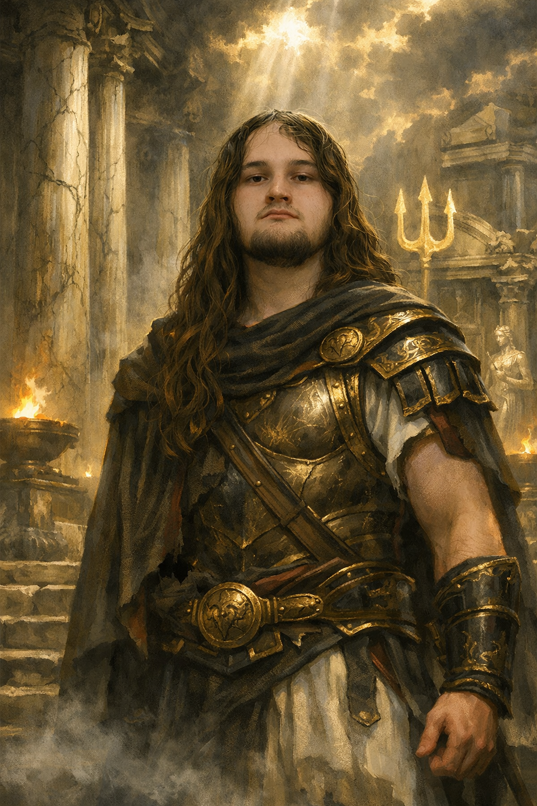

Hi, I'm Zander, a first year Bachelor of Design Interface student at the University of Waikato. This site is a project for DSIGN161, but honestly, Greek mythology has been a genuine interest of mine for a while now, sparked by games like God of War and Greek myths in general.
